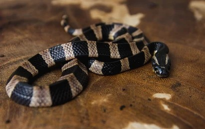
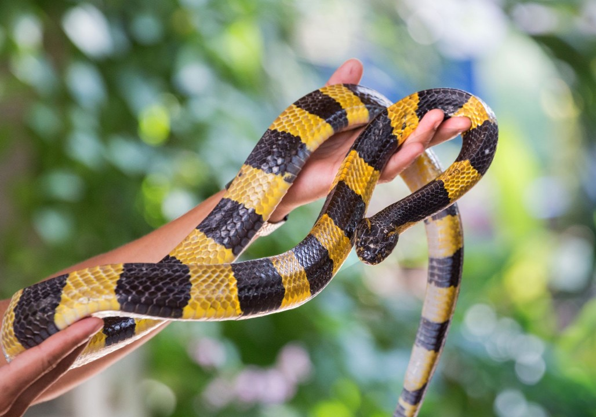
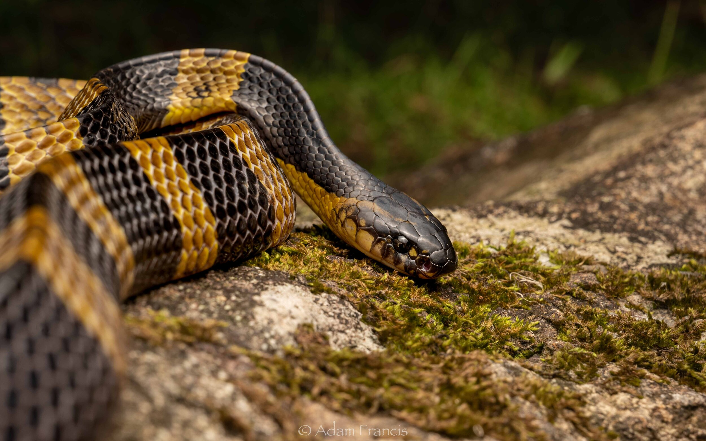
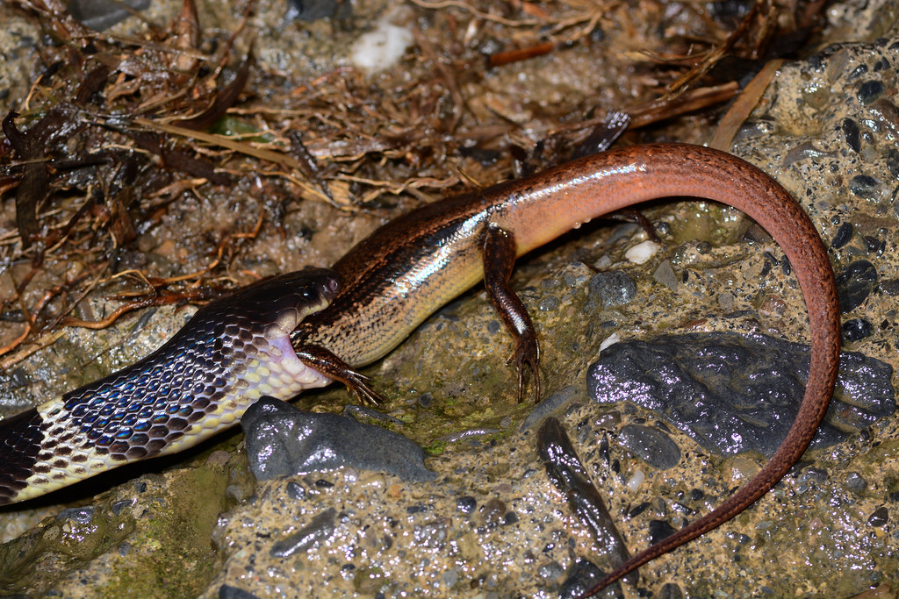

The banded krait (Bungarus fasciatus) is a highly venomous snake found in South and Southeast Asia.
It is easily recognizable by its striking pattern of alternating black and yellow bands encircling its body.
The banded krait can grow up to 2.1 meters in length and has a triangular body cross-section with a short tail.
Primarily nocturnal and shy, it prefers habitats near water bodies, forests, and agricultural lands.
Its venom is neurotoxic, affecting the nervous system and causing paralysis, but the snake is generally non-aggressive, biting only when provoked.
It feeds mainly on other snakes, including venomous species, as well as rodents, frogs, and lizards.

Physical Characteristics
The banded krait (Bungarus fasciatus) is easily recognized by its distinctive black and yellow bands that encircle the entire length of its body.
It has a triangular cross-section with a prominent ridge along the back and can grow up to 2.1 meters (7 feet) in length.
The head is broad and slightly flattened, blending seamlessly with the neck, while the eyes are small with round pupils.
Its scales are smooth and glossy, giving the snake a shiny appearance.
The tail is short and tapering, and the underside is typically yellow.
This bold coloration serves as a warning to potential predators of its venomous nature.

Habitat
The banded krait (Bungarus fasciatus) inhabits a variety of environments across South and Southeast Asia.
It is commonly found in forests, grasslands, agricultural fields, and areas near water bodies such as rivers, lakes, and marshes.
The snake is also known to enter homes, especially during the rainy season, in search of food or shelter.
The snake prefers humid and lowland regions but can also be found at higher elevations.
The banded krait is often spotted near human settlements, especially in rural areas, as it searches for prey like snakes, frogs, and rodents.

Diet and Behavior
The banded krait (Bungarus fasciatus) is a nocturnal and shy snake, spending the day hidden in burrows, under logs, or dense vegetation and becoming active at night to hunt.
It is generally non-aggressive and prefers to avoid confrontation, relying on its bold black and yellow bands to warn potential predators.
When threatened, it may coil its body and hide its head rather than striking.
The banded krait’s diet primarily consists of other snakes, including venomous species, showcasing its role as a top predator.
It also feeds on lizards, frogs, rodents, and occasionally fish.
The snake uses its powerful neurotoxic venom to immobilize prey quickly, ensuring minimal struggle before consumption.

Venom
The venom of the banded krait (Bungarus fasciatus) is highly neurotoxic, affecting the nervous system by blocking nerve signals to muscles, which can lead to paralysis and respiratory failure if left untreated.
Although the venom is extremely potent, the banded krait is shy and non-aggressive, with bites being rare as it typically avoids human contact.
Symptoms of envenomation include drowsiness, abdominal pain, difficulty breathing, and progressive paralysis.
The onset of symptoms can be delayed, making bites particularly dangerous.
Immediate medical attention and antivenom administration are crucial, along with respiratory support in severe cases.
Without immediate medical care, the bite can be fatal within hours, highlighting the need for urgent treatment.